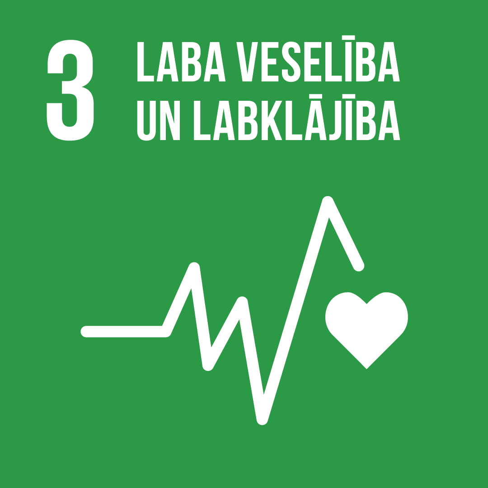
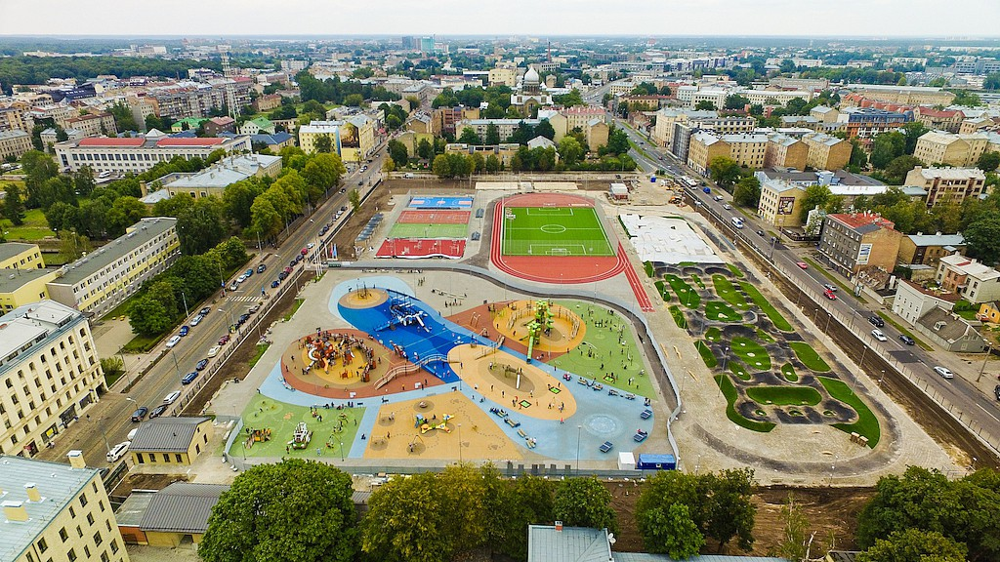

Kas ir laba veselība un labklājība?
Laba veselība un labklājība nozīmē ne tikai to, ka cilvēkam nav slimību. Tas nozīmē justies labi gan fiziski (spēks, izturība), gan emocionāli (labs garastāvoklis, mazāk stresa), gan sociāli (drošas attiecības ar ģimeni un draugiem).
Labklājība ir arī tas, ka mums ir pietiekami daudz resursu – laiks, nauda, droša dzīvesvieta, atbalsts, iespēja mācīties un rūpēties par sevi.
ANO ilgtspējīgas attīstības mērķis Nr. 3

ANO ir izvirzījusi 17 ilgtspējīgas attīstības mērķus. 3. mērķis ir “Laba veselība un labklājība” – nodrošināt veselīgu dzīvi un veicināt labklājību visiem jebkurā vecumā.
Tas nozīmē:
- mazāk slimību un priekšlaicīgas nāves;
- pieejamu un kvalitatīvu veselības aprūpi;
- profilaksi – veselīgu uzturu, fiziskās aktivitātes un drošu vidi;
- atbalstu mentālajai veselībai.
Kāpēc tas ir svarīgi Latvijā?

Latvijā joprojām ir vairāki veselības izaicinājumi: iedzīvotāji pietiekami nekustas, ēd pārāk daudz cukura un taukainu ēdienu, saskaras ar stresu un mentālās veselības problēmām. Daļai cilvēku ir grūtāk piekļūt veselības aprūpei.
Lai to mainītu, ir nepieciešama gan valsts politika, gan skolu un ģimeņu atbalsts, gan arī pašu jauniešu atbildīga attieksme pret savu veselību.
Ko parādīs šis vietnes projekts?
Šajā tīmekļa vietnē mēs:
- izskaidrosim, kas ietekmē mūsu veselību un labklājību ikdienā;
- parādīsim galvenās problēmas un riskus jauniešu vidū;
- piedāvāsim vienkāršus, reāli īstenojamus risinājumus;
- iekļausim nelielu interaktīvu sadaļu pašvērtēšanai un zināšanu pārbaudei.
Projekta galvenā doma – katrs skolēns ar mazām ikdienas izmaiņām var būtiski uzlabot savu veselību un labklājību.